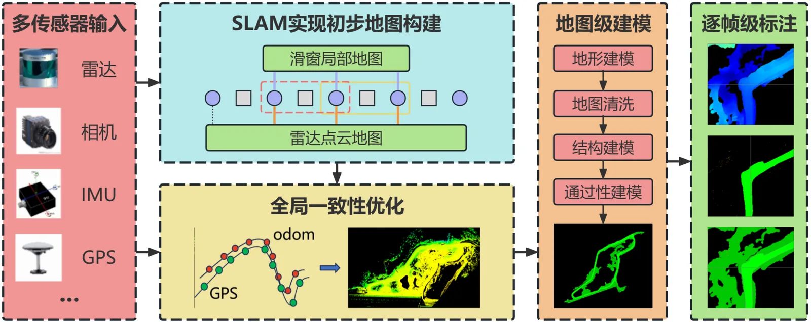
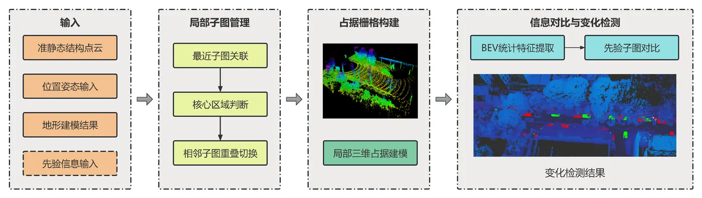
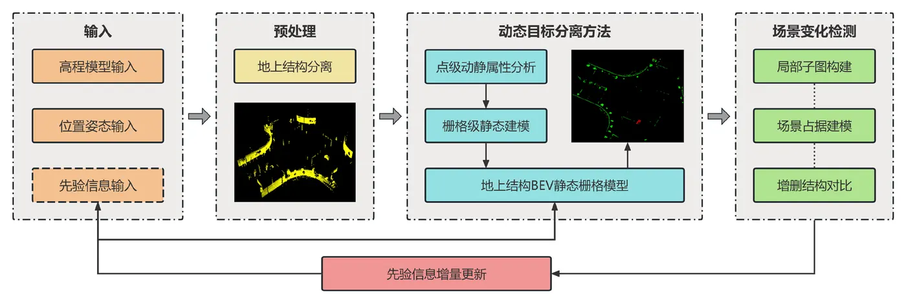
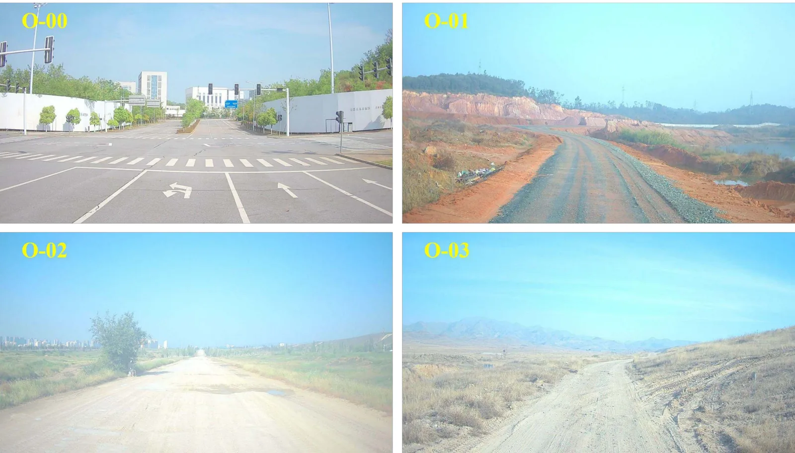
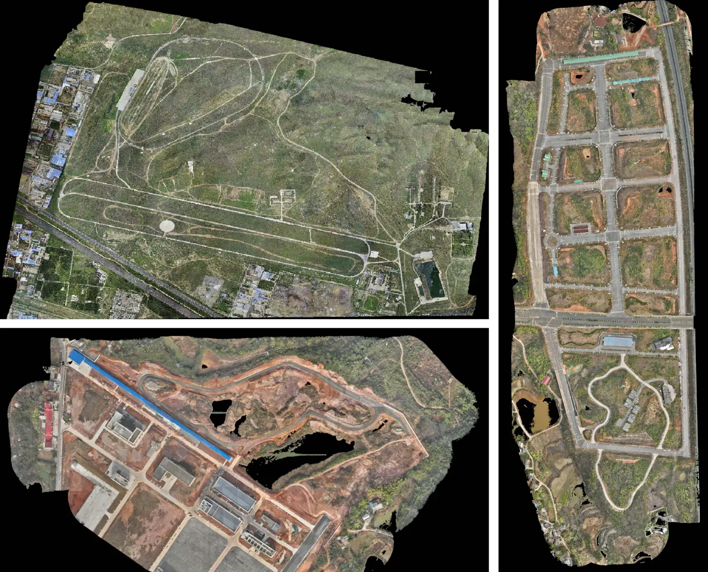
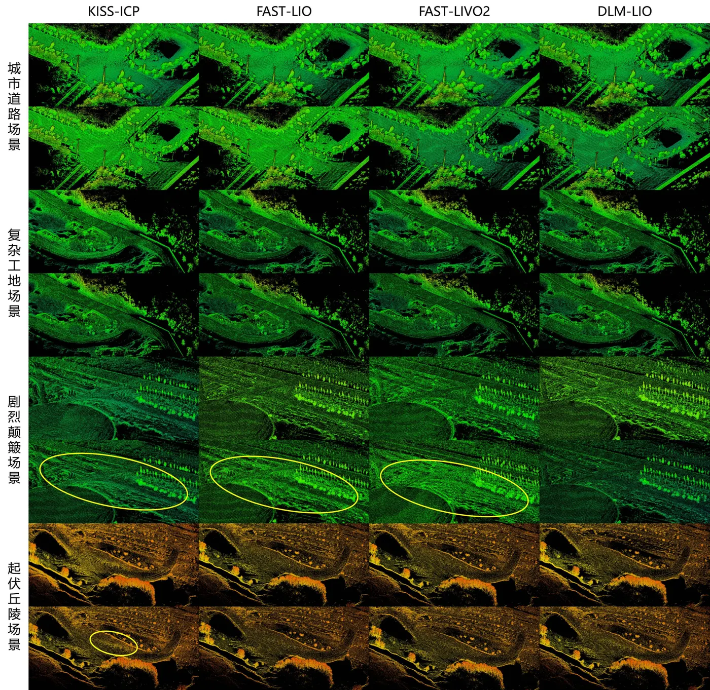
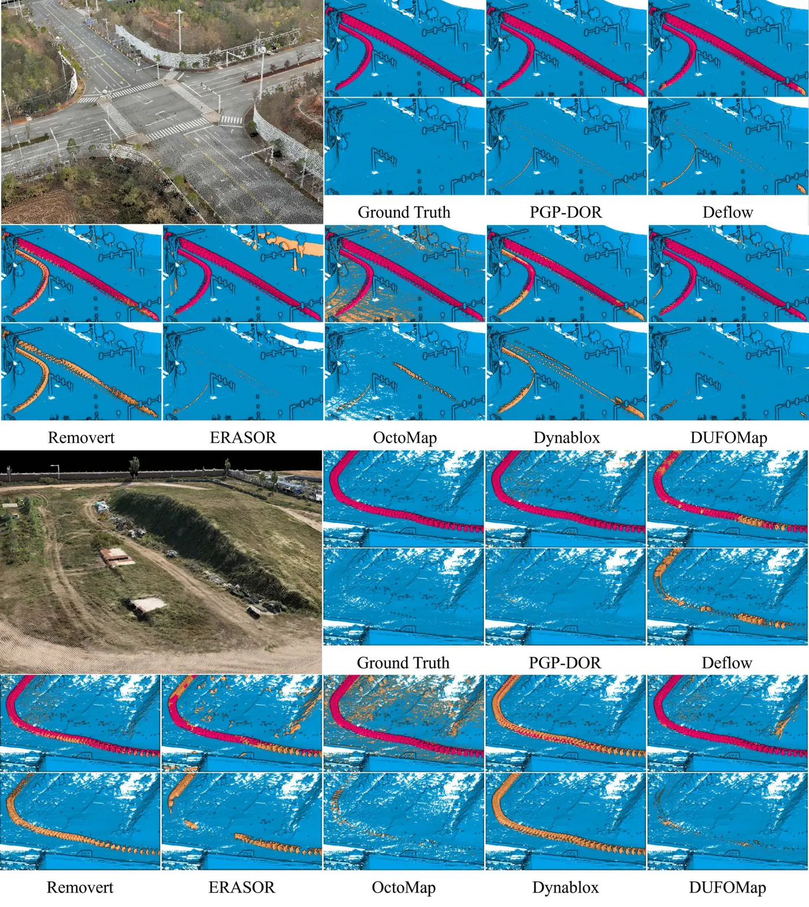
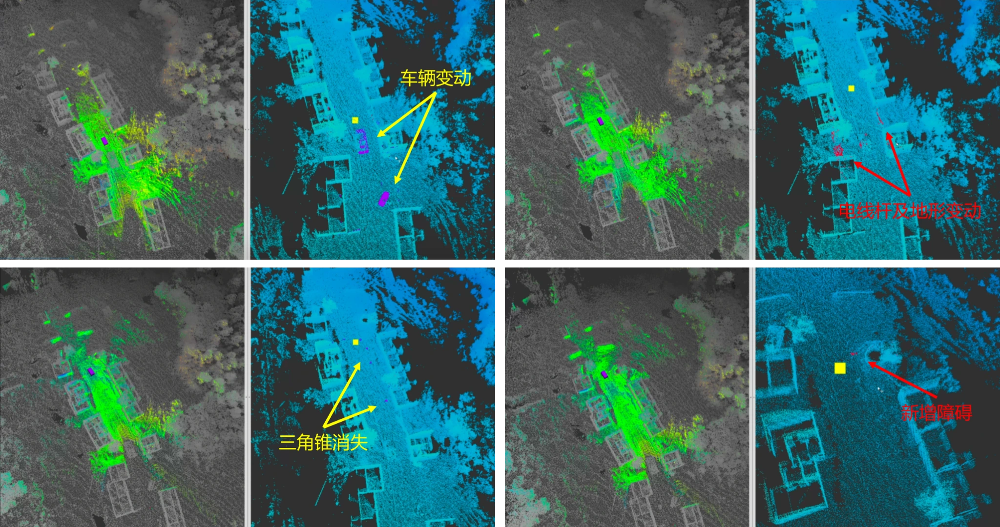
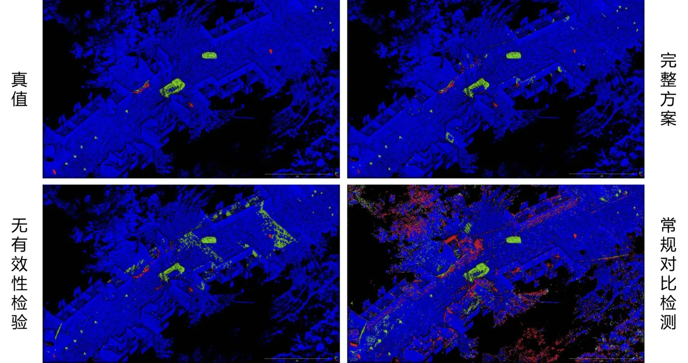

复杂环境下的 SLAM 系统能力
围绕多传感融合定位与先验引导建图，面向 GNSS 退化、地形起伏、场景重复纹理与复杂工地场景，组织从地图级先验构建、在线检索到定位优化的完整链路。
面向无人平台自主感知的研究型工程师
聚焦多传感融合定位、长期地图维护、变化检测与动态分离
面向无人平台长期运行任务，我的工作重点集中在两条主线：一是面向复杂环境与退化条件的多传感融合定位与建图，强调先验信息引导、全局一致性与复杂场景适应能力；二是面向长期运行的地图维护闭环，围绕动态目标分离、局部变化检测与增量式地图更新，提升地图在动态环境中的持续可用性。
SLAM、机器人感知、多传感融合定位、三维地图构建、动态环境感知、长期地图维护、变化检测与更新等方向岗位。
邮箱：1972178768@qq.com
电话：19871938445
GitHub：https://github.com/MichealRW
机构：国防科技大学
相比只停留在单一算法模块，我更强调从定位建图到长期地图维护的系统闭环能力，适合面向真实无人平台应用的岗位场景。
围绕多传感融合定位与先验引导建图，面向 GNSS 退化、地形起伏、场景重复纹理与复杂工地场景，组织从地图级先验构建、在线检索到定位优化的完整链路。
将动态目标分离、局部子图组织、变化检测和增量式地图写回整合为统一框架，不仅关注定位精度，也关注地图在长期运行中的稳定维护和持续可用性。
测试覆盖城市多车结构化场景、悬崖陡坡复杂非结构化场景与工地环境，结合多地区实测数据、可视化对比和视频演示，形成较完整的工程验证链路。

构建面向地图级先验的感知框架，融合激光雷达、IMU、GNSS 以及航测信息，形成从全局先验表达、在线索引到局部感知调用的闭环，以提升复杂场景下的定位鲁棒性与建图质量。

围绕长期运行中的环境演变问题，利用局部子图、占据与高程信息组织变化检测，将新增变化、减量变化与动态目标分离结果统一汇入地图维护模块，实现低冗余的持续更新。

采用“点-栅格-点”思路组织动态目标分离，在保持静态环境一致性的同时，为后续变化检测和地图更新提供更干净的输入。该能力既服务于在线感知，也服务于长期地图维护。
通过可切换的结果面板，集中展示定位鲁棒性、建图质量、动态分离与变化检测等关键证据，适合面试中边讲边切换。
测试覆盖结构化与非结构化环境，包括城市道路、多车交通场景，以及悬崖、陡坡、土路、复杂工地等复杂环境，验证定位与地图维护方法在不同条件下的适应性。

场景包含城市道路、矿区工地、土路与荒野环境，覆盖包头、酒泉、阿拉善、汨罗、长沙、孝感、北京、南京等多个城市与测试地区，为定位建图和长期地图维护提供了多样化验证基础。

利用无人机航测获得的大范围先验信息，与地面无人平台在线感知形成协同，为全局先验索引、场景理解以及长期地图维护提供基础支撑，也体现了我在多源地图表达方面的系统意识。
页面内嵌两个演示视频，分别对应定位能力和动态分离性能，适合投递链接后直接展示，不需要额外跳转。
保留若干适合网页浏览的关键图示，可点击放大查看，既可快速浏览，也可作为面试交流时的辅助材料。

建图质量对比
动态分离效果对比
变化检测案例
地图更新结果用于求职展示时，可以用这一部分快速给出教育背景、研究方向定位和技术关键词。
研究工作围绕无人平台自主感知展开，重点覆盖多传感融合定位与建图、动态环境感知、变化检测以及长期地图维护更新。
适合投递机器人、自动驾驶、无人平台、三维感知、地图构建、地图维护与在线更新等岗位，能够从问题定义、系统设计到实验验证完整讲清技术工作。
不仅关注算法点结果，也关注先验调用、地图管理、动态分离、变化写回与视频演示等完整链路，具备较强的研究表达与工程落地意识。
以下信息已按你的要求更新，可直接用于公开部署版本。